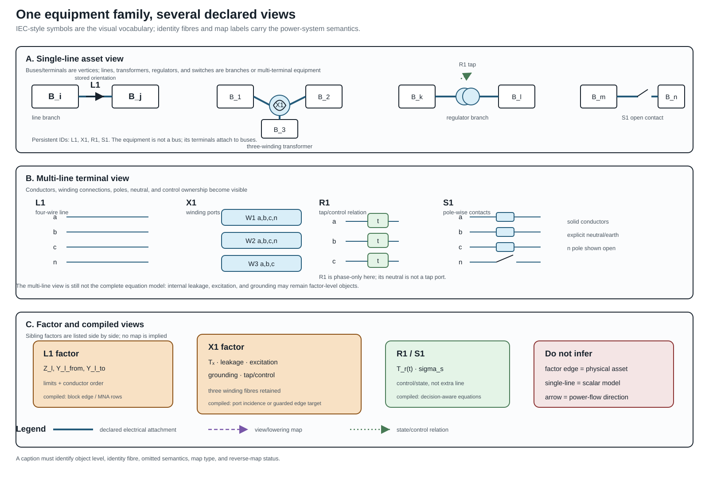
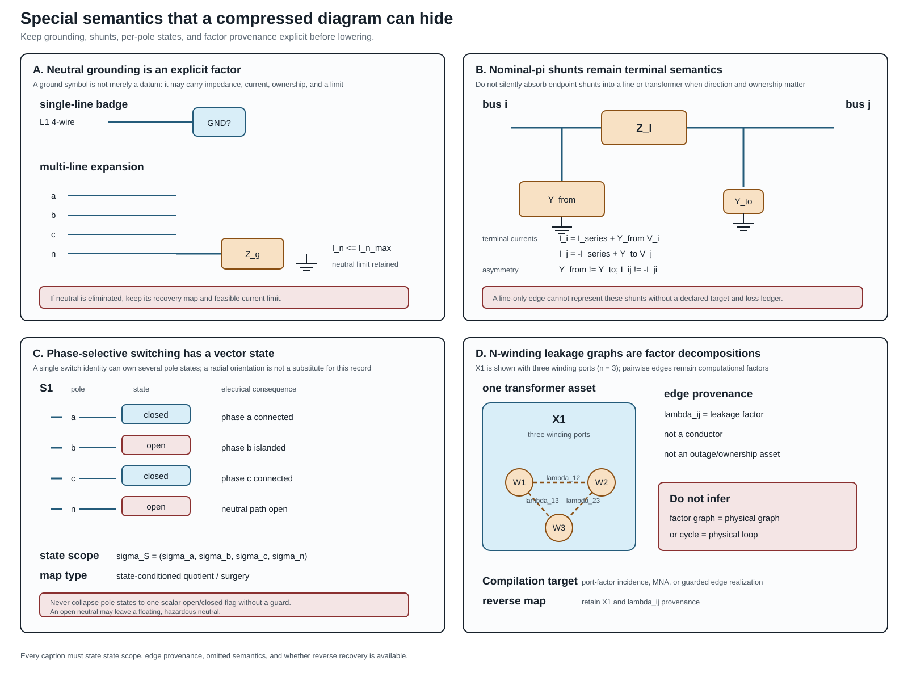
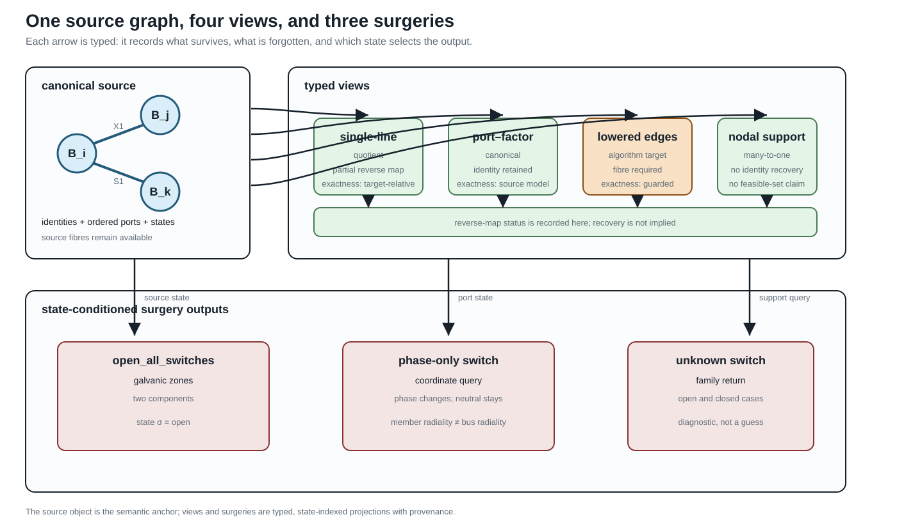

From source graphs to views and graph surgery
Page status: proposed architecture with a package-independent compiled-view, degeneracy, phase-selective switching, and state-conditioned zone-surgery witness; broader transformation algebra remains open.
This chapter makes one boundary explicit: a power-network model is not one picture that is repeatedly relabelled. It is a typed source object together with views and state-conditioned operations. The same asset may therefore appear in a single-line diagram, a multi-line diagram, a port–factor graph, a bus–branch quotient, and a nodal-support graph without those drawings having the same semantics.
This chapter is the bridge between formal representation frameworks, node–breaker topology processing, cycles and radial structure, and the transformation semantics register.
Identity-bearing source graphs
The canonical electrical source is the hierarchical port–factor model $\mathfrak P$ defined in Formal representation frameworks. For this chapter only, use the following view-level shorthand: $\mathcal E$ names identified factors, $P_e= f^{-1}(e)$ their ordered port sets, $\iota$ is the canonical attachment map $j$, and $\mathcal R$ collects the canonical containment, coordinate, state, and factor relations. Thus the shorthand
\[\mathcal M_{\mathrm{view}} =(\mathcal J,\mathcal E,\{P_e\}_{e\in\mathcal E},\iota,\sigma,\mathcal R)\]
is a notation convenience, not a second canonical tuple. A two-terminal line has $|P_e|=2$. A three-winding transformer has $|P_e|=3$ (or more when conductor ports are explicit). Its identity is not recovered by looking at three pairwise edges after the fact.
An identity fibre is a set of source objects that a later view represents by one object. For a view $v$ write
\[q_v:\mathcal M\longrightarrow \mathcal V_v,\qquad \operatorname{fib}_v(x)=q_v^{-1}(x).\]
The fibre may be a singleton, a parallel family, or a mixed family of ports and factors. The quotient is useful only when the query is invariant over the fibre, or when the omitted distinctions are carried as guards and provenance.
This is why the book's $\ell i j$ notation retains line identity: $\ell$ labels the physical member while $i$ and $j$ describe its endpoints. A quotient may forget $\ell$; it must not pretend that the member never existed.
A visualisation registry
The six initial view classes are recorded in the artifact experiments/generated/compiled-views-surgery-witness.json.
The same artifact carries four explicit source-to-view map records. These are small contracts, not inferred drawing relationships: each names its source and target object IDs, map kind, preserved and forgotten semantics, and reverse-map status.
This registry is the book's scoped application of typed algebraic graph transformation: maps have declared matching conditions, omitted structure, and negative conditions such as “do not contract an unknown switch.” The broader double-pushout theory, rewrite composition, and confluence vocabulary are available in [34]; this chapter does not claim to implement that entire calculus.
Two views are equal only up to the equivalence declared for their framework: an isomorphism may rename objects and coordinates, while a quotient or lowering is equal only when its preservation contract and source fibres agree. This uses the morphism/isomorphism distinction in Maps between representation frameworks, rather than treating two drawings that look alike as the same view.
| View | Typical purpose | What it can forget |
|---|---|---|
| single-line | equipment-level communication and planning | conductor coordinates and internal factor equations |
| multi-line | identified conductors and phase/neutral paths | internal n-port equations |
| port–factor | canonical coupled electrical model | asset ownership if it is not attached |
| node–breaker | switching and connectivity decisions | compiled bus equations |
| nodal support | matrix coupling and ordering | factor identity, multiplicity, and switch decisions |
| reduced/Kron | retained-port equivalent | eliminated coordinates and unmapped member limits |
Standards boundary and the house visual contract
The visual language has several useful standards precedents, but no single standard specifies the full path from a power-system asset to a multiconductor factor graph or a compiled equation system. IEC 60617 supplies a maintained library of electrotechnical graphical symbols [35], while IEC 61082 supplies rules for preparing and presenting electrotechnical documents and diagrams [36]. These standards constrain how symbols and documents should be presented; they do not decide whether a three-winding transformer is represented as one factor, a star, a complete leakage graph, or an ordinary-edge realization.
The exchange standards answer a different question. IEC 61970-453 links diagram-layout definitions to CIM objects and supports management of schematic revisions [37]. IEC 61850-6 exchanges substation and IED configuration structures [38]. Transformer terminal, neutral, polarity, and connection conventions are covered by IEEE C57.12.70 [39]. We therefore use these standards as interoperability anchors, not as evidence that a drawing alone preserves the source model.
Every maintained diagram in this book should declare the following contract:
| Contract field | Question the caption or registry must answer |
|---|---|
| object level | Is this an asset, terminal, conductor, factor, equation, or operational overlay? |
| identity fibre | Which source objects are represented by the drawn object? |
| preserved semantics | Which connectivity, terminal, constitutive, limit, state, and provenance facts remain? |
| omitted semantics | What has been hidden: neutral, shunt, winding identity, control, or internal state? |
| map type | Is the relationship a refinement, quotient, decomposition, compilation, or approximation? |
| reverse map | Is recovery total, partial, state-conditioned, or unavailable? |
| state scope | Is a state asset-wide, ganged, per-winding, per-conductor, or per-pole? |
| edge provenance | Is a drawn edge a physical asset, terminal relation, factor, support edge, or control relation? |
This makes a symbol a typed visual interface rather than an unqualified icon. The same $x_1$ identifier should survive the asset, multi-line, factor, and compiled views even when the latter introduces virtual nodes or edges.
Equipment visual-language matrix
The first maintained equipment plate uses the following matrix. It is a design guide for future figures, not a claim that every cell is a separate graph class.
| Equipment | Single-line identity view | Multi-line terminal view | Factor/equation view | Operational overlay |
|---|---|---|---|---|
| line $\ell i j$ | one identified branch with model badge | ordered conductors, neutral, endpoint shunts | $\mathbf Z_\ell$, $\mathbf Y_\ell$ and coupling blocks | outage, rating, orientation convention |
| transformer $x$ | one asset with winding count and connection group | winding bundles, WYE/DELTA/zig-zag, neutral and earth ports | transfer maps, leakage, excitation, grounding | tap, phase shift, control mode |
| regulator | transformer-like asset plus control marker | per-phase or mechanically coupled taps | $\mathbf T_x(t)$ and control equations | tap state, deadband, decision status |
| switch/breaker | one connectivity device | pole-wise contacts and gang relation | ideal constraint or state-conditioned quotient | open, closed, unknown, phase-selective |
| shunt/ground | attached auxiliary symbol or explicit badge | separate branch to neutral/earth/reference | admittance or grounding factor | switched state, protection, ownership |

This plate is generated by experiments/render_visual_language_equipment_plate.py. It is deliberately a cross-view legend rather than a standards-compliance drawing: the persistent IDs identify the source objects, while the dashed maps show where a view or lowering introduces derived factors. The warning panel is part of the figure's semantics—single-line compression does not certify a scalar model, and a factor edge does not become a physical asset.
The visual grammar uses line style and labels in addition to colour: solid connectors denote declared electrical attachment, double strokes denote a conductor bundle, dashed arrows denote a view or lowering map, and a separate control arrow denotes a decision or operating relation. An arrow on an $\ell i j$ branch is an orientation convention, not a claim about the sign of operating current or complex power.
The three-winding transformer expansion is deliberately progressive:
- one asset glyph $x_1$;
- explicit winding and conductor ports;
- ideal-transfer, leakage, excitation, grounding, and control factors;
- a target-specific block or ordinary-edge compilation.
If a leakage decomposition uses a complete pairwise graph between winding states, its edges must be labelled leakage-factor edges. They are not physical conductors and must not be fed to an asset outage or ownership algorithm as if they were independent lines. This is the critical visual lesson borrowed from the transformer decomposition literature and made explicit in the book.
Special semantic overlays
The companion plate below makes four omissions especially difficult to miss. Neutral grounding is an explicit factor with its own current and recovery obligations. A nominal-$\pi$ line has two terminal shunts, so absorbing them into a line or transformer changes the terminal-power and ownership semantics. A phase-selective switch has a vector state $\sigma_S$ rather than one scalar open/closed bit. Finally, an $n$-winding leakage graph may contain pairwise computational factors whose edges have no asset identity. These are different kinds of edge, even when a target graph library draws them with the same stroke.

For review and reuse, the shared legend is:
| Mark | Meaning in the plates | Do not infer |
|---|---|---|
| bus rectangle | retained connectivity node or terminal boundary | an equipment asset |
| equipment glyph | identified physical asset | one scalar constitutive equation |
| orange factor box | constitutive or computational factor | an independently switchable asset |
| dashed $\lambda_{ij}$ edge | pairwise leakage/coupling factor | a conductor, outage edge, or physical cycle |
| open/closed state chip | declared per-pole state | one state for every pole or winding |
| earth branch | explicit reference, grounding, or neutral path | a removable datum with no current consequence |
The rule is operational: before a lowering or graph-surgery algorithm runs, record state scope and edge provenance in the map certificate. If either is unknown, retain the richer factor representation or refuse the transformation.
The registry is not merely a list of drawing conventions. Each view declares its object level, preserved semantics, forgotten semantics, and reverse-map status. A caption should therefore say “quotient view” or “lowered view” when that is what the reader is seeing. A visually plausible single-line diagram is not evidence that a neutral, grounding factor, switch state, or multiport identity survived.
The map is often one-way. A nodal support graph can show that two terminal coordinates couple, but it cannot identify which parallel members produced the nonzero block. A reduced circuit can preserve a retained-port relation while leaving no source-level current limit for an eliminated neutral. This is a semantic limitation, not a rendering defect.
The industrial node–breaker, bus–breaker, and bus–branch progression in CIM and PowSyBl is a useful precedent for this registry [31, 33]. The present registry extends that idea to multiconductor ports, n-terminal factors, grounding, and reduction provenance.

The upper row is a representative subset of the six-entry registry: the arrows may be quotient, refinement, lowering, or many-to-one assembly maps. The node–breaker and reduced/Kron entries are omitted from this compact figure. The lower row is a surgery family: the same source can produce different active graphs, and an unknown state produces a family rather than a silently selected result.
Lowering as a typed compilation boundary
For a declared algorithm, use the following typed pipeline. Direct factor stamping into a declared equation/constraint operator is the default; a nodal admittance target and ordinary-edge lowering are optional guarded branches. The formulation choices and exact-$\mathbf Y$ guards are developed in Circuit formulations and the lowering boundary.
\[\mathcal M \xrightarrow{\;C\;} \mathcal M_{\mathrm{port}} \xrightarrow{\;A\;} \mathcal E=(\mathbf F,\mathbf g,\operatorname{obs},\operatorname{prov}), \qquad \mathcal M_{\mathrm{port}} \xrightarrow{\;L\;} \mathcal G_{\mathrm{edge}} \xrightarrow{\;A_{\mathrm{edge}}\;} \text{target algorithm}.\]
When the nodal guards hold, $\mathcal E$ may additionally lower to a nodal operator $(\mathbf Y^{\mathrm N},\mathbf J)$. Otherwise the faithful target may be MNA/tableau or a direct factor relation; the compiler must not invent a $\mathbf Y$ merely because a downstream library expects one.
$C$ completes the canonical port–factor representation. $L$ lowers a factor to the ordinary-edge or incidence objects expected by a graph algorithm. $A$ assembles equations or sparsity. Every arrow must record:
- the source object and coordinate order;
- the target object IDs and source fibres;
- the relations and limits that are preserved;
- the semantics intentionally omitted; and
- whether a reverse map is total, partial, or unavailable.
For a three-port transformer, a lowerer may introduce three ordinary edges in an incidence graph, but this is exact only under a declared realizability condition. For a reciprocal terminal admittance $\mathbf Y_\phi$ with terminal-space all-ones vector $\mathbf 1$, an edge-only realization requires the floating/no-ground-path condition $\mathbf Y_\phi\mathbf 1=0$ (together with the target library's reciprocity and coordinate assumptions). Otherwise the exact complete-graph construction needs the pairwise series blocks and residual shunts
\[\mathbf Y^{\mathrm s}_{pq}=-\mathbf Y^{\mathrm K}_{pq}, \qquad \mathbf Y^{\mathrm{sh}}_p =\mathbf Y^{\mathrm K}_{pp} -\sum_{q\ne p}\mathbf Y^{\mathrm s}_{pq}.\]
This is the realizability proposition in Kron, Ward, and optimized network equivalents, not an automatic transformer-to-three- lines rule. Magnetizing, grounding, or other retained shunt current must not be silently dropped. Even when the expansion is exact, the ordinary-edge graph is not the canonical equipment graph: removing its provenance fibre would make later operations unable to distinguish a transformer from three unrelated lines.
The analogy with compiler lowering is useful because it sets the right expectation: lowering changes the representation so an algorithm can run. A nanopass compiler similarly uses many small, typed intermediate passes rather than one opaque rewrite [40]. The analogy does not grant permission to infer source semantics from the lowered code.
State-conditioned graph surgery
Graph surgery is a family of queries and transformations indexed by a declared state $\sigma$. For a surgery operation $S$ write
\[S(\mathcal M,\sigma)=(\mathcal V_\sigma,\mathcal D_\sigma,\operatorname{prov}_\sigma),\]
where $\mathcal V_\sigma$ may be one graph or a finite family of graphs, $\mathcal D_\sigma$ contains diagnostics, and $\operatorname{prov}_\sigma$ maps each output node, edge, port, and zone to its source objects.
Useful operations include:
- openallswitches, which removes switch conductance while retaining the switch assets as possible future actions;
- galvanic_zones, which computes connected components using only the declared zero-impedance or closed-switch relation;
- energized_subgraphs, which additionally uses sources and a declared energization rule. The term is intentionally inherited from the book's terminology and translation-traps chapters; in a multiconductor model the query is port-indexed, so one phase may be energized while the neutral remains floating;
- active_radiality, which reports member, endpoint, conductor, and compiled bus predicates separately; and
- eliminate_switches, which is a lowering operation only after its state and zero-impedance assumptions are fixed.
An unknown switch state must return a family or an explicit unknown result. It must not be silently treated as open. Two-terminal and n-terminal surgeries also differ: a phase-only switch acts on phase ports without necessarily opening the neutral or earth path. Consequently, a bus-level tree can coexist with a disconnected phase-terminal graph, or with a neutral path that remains connected.
For $n$ binary unknown switches, explicit completion enumeration can contain up to $2^n$ active graphs. Enumeration is appropriate for small certificates, but it is not the default representation for a large substation. The default summary is three-valued for each queried pair or port set:
- certainly connected in every admissible completion;
- certainly separated in every admissible completion; or
- undetermined, connected in some completions and separated in others.
This summary is the intersection/union view of the state-conditioned quotient $\pi_\sigma$ from node–breaker topology processing. A caller can request explicit completions when the summary is insufficient.
For an n-terminal factor, the surgery result should name the active and isolated port sets. Opening the $lv$ port of a three-winding transformer is not the same operation as deleting one of three pairwise lines: the factor identity, the remaining $hv$/$mv$ relation, and the isolated-port status remain explicit. If the port state is unknown, the result is a family of port sets.
Degenerate and under-determined models
Some modelling problems cannot be resolved from the graph alone. In the generated witness, two identified ideal switches have identical terminals and the same state domain. Electrically, their parallel closed quotient is perfectly well-defined. The ambiguity is in the orthogonal asset/dependency model: the quotient cannot say which device owns protection, maintenance, or failure semantics. The correct result is therefore an asset-attribution diagnostic with both source identities retained, not a claim that the electrical model is ill-posed.
The same rule applies to duplicate factor/terminal sets, missing grounding or reference declarations, and singular active-state maps. These are not ordinary graph errors: they are model-quality findings that require a source declaration, an additional observation, or a deliberately restricted query.
In particular, a four-wire coordinate list without a grounding or reference declaration must not acquire one by convention. Likewise, a rank-deficient active-state map must not be inverted merely because a downstream algorithm expects an inverse. A restricted endpoint-voltage query, an explicit pseudoinverse policy, or a source-level grounding declaration may make a well-scoped operation possible; the default result is a diagnostic.
Executable scope
The package-independent witness experiments/generated/compiled-views-surgery-witness.json checks six small cases:
- a three-port transformer lowered to ordinary edges with a retained source fibre;
- two parallel ideal switches reported as under-determined rather than collapsed;
- a four-wire phase-only switch whose phase connectivity changes while the neutral path remains connected; and
- an open/closed/unknown switch surgery that returns one-zone, two-zone, or state-family results;
- a port-selective n-terminal surgery that retains the isolated port; and
- missing-reference and singular-active-map diagnostics.
These are architecture witnesses, not claims that every utility data model uses the same view classes. The next extensions are richer n-terminal factors, energization and protection semantics, and independently reviewed adapters to external standards.